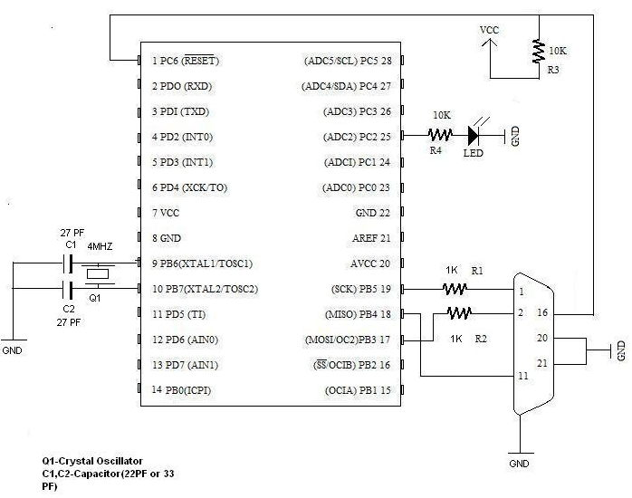

| Avr-Microcontrollers-in-Linux-Howto | ||
|---|---|---|
| Prev | ||
Permission is granted to copy, distribute, and/or modify this
document under the terms of the GNU Free Documentation License,
Version 1.2, or any later version published by the Free Software
Foundation; with no Invariant Sections, no Front-Cover Texts, and
no Back-Cover Texts. A copy of the license is included in the
section entitled "GNU Free Documentation License". |
A microcontroller is a single-chip computer. It has internal RAM, ROM, timers, counters, interrupt circuitry, I/O ports, analog comparators, serial USARTs, analog to digital converters, watchdog timers, and a RISC architecture. When you are using a microprocessor, you cannot program it alone. You need other components, like RAM, ROM, timers, etc. For programming, you should know its architecture thoroughly: You must read the datasheet for your microcontroller.
binutils: Tools like the assembler, linker, etc.
gcc-avr: The GNU C compiler (cross-compiler for avr).
avr-libc: Package for the AVR C library, containing many utility functions.
uisp: A Micro In-System Programmer for Atmel's AVR MCUs (for burning code to MCUs' memory).
The following Atmel microcontrollers are supported by avr-gcc in Linux:
at90s Type Devices
at90s2313, at90s2323, at90s2333, at90s2343, at90s4414, at90s4433, at90s4434, at90s8515, at90s8515, at90s8515, at90s8535, at90s1200.
atmega Type Devices
atmega103, atmega603, atmega8, atmega48, atmega88, atmega8515, atmega8535, atmega16, atmega161, atmega162, atmega163, atmega165, atmega168, atmega169, atmega32, atmega323, atmega325, atmega3250, atmega64, atmega645, atmega6450, atmega128.
attiny Type Devices
attiny22, attiny26, attiny26, attiny13, attiny13, attiny13, attiny13, attiny2313, attiny11, attiny12, attiny15, attiny28.
Other AVR Devices
avr2, at90c8534, at86rf401, avr3, at43usb320, at43usb355, at76c711, avr4, avr5, at90can128, at94k, avr1.
binutils: Programs to manipulate binary and object files that may have been created for Atmel's AVR architecture. This package is primarily for AVR developers and cross-compilers.
gcc-avr: The GNU C compiler, a fairly portable optimising compiler that supports multiple languages. This package includes C language support.
avr-libc: Standard library used for developing C programs for Atmel AVR microcontrollers. This package contains static libraries, as well as needed header files.
uisp: Utility to program AVR chips with object code created by gcc-avr. It supports in-system programming.
You download the above packages untar, configure, and install it. If you are using Debian or Ubuntu, these packages are available in your distribution: Install them using apt or synaptic package manager.
We are writing hello world for the atmega8 microcontroller, which has a 28-pin, 8-bit, RISC architecture.
Before proceeding, have a look at this manual about __avr-libc__, which will help you program better, and understand. Also, refer to the datasheets for the various AVR microcontrollers.
Here is our first program:
/* ledblink.c, an LED blinking program */
#include<avr/io.h>
#include<util/delay.h>
void sleep(uint8_t millisec)
{
while(millisec)
{
_delay_ms(1);/* 1 ms delay */
millisec--;
}
}
main()
{
DDRC |=1<<PC2; /* PC2 will now be the output pin */
while(1)
{
PORTC &= ~(1<<PC2);/* PC2 LOW */
sleep(100);/* 100 ms delay */
PORTC |=(1<<PC2); /* PC2 HIGH */
sleep(100);/* 100 ms delay */
}
} |
The GNU C compiler for the Atmel family identifies all functional units within the microcontroller with meaningful names. Thus, writing `PORTC=0xff' will result in the compiler generating machine code that writes 0xff to I/O port C, which will set all port C pins to logic high. Because ports are bidirectional, we must decide whether each pin should act as input or output. If the i'th bit of a register called DDRC (data direction register C) is 1, then the i'th pin of PORTC's i'th pin will be an output. Otherwise, it will act as an input pin. (Note that pin and bit numbers start at zero.) To make an LED blink, you have to make a pin high, then low. (Here, we use PORTC's 2nd port. That is, PC2 will be the 25th pin.) There should be a delay between the two. This is what the rest of the code does. For the delay, we use built-in function _delay_ms(1), which causes a 1 ms delay.
avr-gcc -mmcu=atmega8 Os ledblink.c o ledblink.o |
which will result in object file ledblink.o. Now, we will covert it to hex file, suitable for burning to the microcontroller's memory.
avr-objcopy -j .text -j .data -O ihex ledblink.o ledblink.hex |
We are converting it to a hex file because, for burning the code to atmega8, we will use uisp, whose input file must be a .hex file.
Notice that you can less the ledblink.hex file.
:1000000012C02BC02AC029C028C027C026C025C0C6 :1000100024C023C022C021C020C01FC01EC01DC0DC :100020001CC01BC01AC011241FBECFE5D4E0DEBF28 :10003000CDBF10E0A0E6B0E0EAE8F0E002C0059035 :100040000D92A036B107D9F710E0A0E6B0E001C0EC :100050001D92A036B107E1F70CC0D2CF282FE4ECF7 :10006000F9E004C0CF010197F1F721502223D1F725 :100070000895CFE5D4E0DEBFCDBFA29AAA9884E66A :0A008000EDDFAA9A84E6EADFF9CF6B :00000001FF |
We will be using the parallel port for burning. First, we have to develop a burning circuit for it.

This is the circuit for the atmega8 microcontroller. Pin 9 & pin 10 are connected by a 4 MHz crystal oscillator, which is the external clock. The bottom right connector is for a parallel port.
If you are using any other microcontroller, as mentioned above, you should change accordingly. }}}
You should watch for RESET,XTAL1,XTAL2,SCK,MISO,MOSI pins, and connect.
Now, we will burn ledblink.hex to the microcontroller.
uisp -dprog=dapa -dlpt=0x378 |
You should get message Atmega8 Found.
dprog is the programming method specifier, which in this case is dapa, i.e., Direct AVR Parallel Access. dlpt is for the parallel device setting, which is 0x378, the parallel port's device address.
uisp -dprog=dapa -dlpt=0x378 --erase |
Will erase the microcontroller's code.
uisp -dprog=dapa -dlpt=0x378 --upload if=ledblink.hex |
Will upload the Input File ledblink.hex
Notice that you can see the LED at pin 25 blinking.
Comments to: mailto:ranjeeth_gecmail[at]yahoo[dot]com
Govt Engg College Sreekrishnapuram,
Palakkad,Kerala India.
You may find the last up-to-date version of this HOWTO on the LDP wiki.